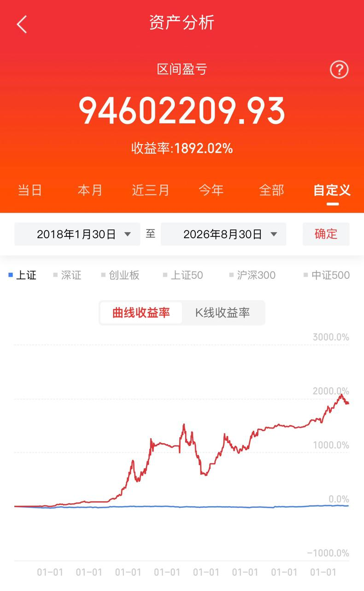

01
体系化决策
先胜后战 趋势定方向 位置定赔率 结构定信号 每个进场点 都得说得出理由
通跃 App: 每日复盘 22:00 推送
A 股顶级短线操盘手 · 细节分析理论创立者
复旦数学系毕业 1993 年入市 国内第一代操盘手 机构独立操盘手 大资金运作经验
关于我
1993 年入市 曾任申能资产投资岗 长期任机构独立操盘手 机构资金进出 必须看得懂盘口语言 这就是我创立细节分析理论的起点
2003 年起 在《上海证券报》主持《操盘手札记》专栏 后更名《实战心得》 出版《看盘细节》等书 现为多所高校客座教授
现在 每天在通跃 App 实战交流群 盘前消息面解析 竞价超短选股 实盘解析与复盘 晚间操盘系统技术课程 因为我深信交易这件事 教会一个是一个
一层体检 二层定线 三层看K线真相 四层看天气 五层等进攻信号 一套能落地的看盘顺序
天罡竞价选强 趋势猎龙波段 潜龙出海擒妖 涨停回马枪二波 分时魔镜做T 超级版面复盘
十倍股不是涨出来的 是符合基因之后被资金选出来的 九个特征逐条对照
一条被 98% 的人画错的线 决定你是亏损有限还是套牢无期
周期 位置 仓位 想清楚再动手 胜率自然上来
买在没人敢买时 卖在人人想买时 拆开就是买卖点框架
把分时图读成多空双方当天的博弈现场
我的体系
这三件事 我验证了三十年 每件都能立刻执行 现在 每天在通跃 App 拆给你看
先胜后战 趋势定方向 位置定赔率 结构定信号 每个进场点 都得说得出理由
通跃 App: 每日复盘 22:00 推送
计划你的交易 交易你的计划 进场前定好仓位和离场 盘中只执行 不改主意
通跃 App: 计划清单 + 买卖点留痕
活下来才有一切 单笔风险固定 止损是计划一部分 不是事后补救
通跃 App: 行情转折风险提醒
实战战绩
这套体系不挑行情 亏损锁在固定范围 盈利交给趋势 以下为长期表现
回撤可控历史最大回撤控制在 12% 以内 单笔止损固定 不扛单不摊平
胜率不是重点47% 的胜率也能稳定盈利 因为盈亏比 3:1 对一次抵三次错
普适可验证所有信号来自公开行情数据 复盘文章里每个进出场点都留痕可查
策略净值 回测演示
0x
实盘持仓收益
实战验证
通跃 App
三十年的复盘习惯 搬到了 App 上 盘前解析 实盘复盘 体系课程 免费下载 不喜欢随时删
安卓包约 172MB · 微信内请点击右上角「在浏览器打开」